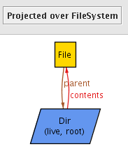

In lesson I, we successfully modeled a simple file system. It had file system objects (which were divided into files and directories), a single root directory, and parent and child relationships between the file system objects. We verified through Alloy assertions that the system obeyed certain correctness properties.
However, our model is static: It has a set of file system objects and relations between them, but that set and those relations cannot change in any way. Thus, the model is inadequate if we'd like to model dynamic aspects of file systems, such as move and delete operations. To do so, we will create a model that allows for multiple file systems, and we will express "move" and "delete" as transitions between these file systems. That is, each file system can be thought of as a different version of the same file system after a mutating operation has been performed.
Our first signature declaration declares a set of file system objects called FSObject, just like it did in the previous version. However, this time the body is empty -- it does not contain a parent relation field. Since this model will allow for multiple file systems, the parent relation is not a single entity that exists between all file system objects; there is a different one for each file system, so it belongs with the FileSystem signature (discussed below)
// A file system object in the file system
abstract sig FSObject { }
Next we see a single signature being used to declare both File and Dir simultaneously. As before, they are disjoint subsets of FSObject. However, this time theirs bodies are identical (both are empty), so we can define them more compactly in a single statement.
// File system objects must be either directories or files.
sig File, Dir extends FSObject { }
The third and final signature in the model declares the set FileSystem, representing the set of all file systems. The body of this signature declares four relations that every file system needs: root, live, contents, and parent. Note that when multiple fields are declared within a single signature body, they are separated by commas.
// A File System sig FileSystem { root: Dir, live: set FSObject, contents: Dir lone-> FSObject, parent: FSObject ->lone Dir }
The first field relates each file system to exactly one directory, its root.
The live relation relates each file system to the set of file system objects it contains. The set keyword allows the contents relation to relate FileSystems to any number of file system objects (even zero). Omitting the set keyword would constrain the live relation to map every file system to exactly one file system object -- a mistake if you want non-trivial file systems!
You'll notice that the syntax of the contents and parent relations are markedly different from the other fields.
contents: Dir lone-> FSObject, parent: FSObject ->lone Dir
These are ternary relations, defined using the relational product operator ("->"). Think of them as fields which are themselves relations. The contents relation maps each file system to a binary relation from directories to file system objects. Similarly, parent relates each file system to file system objects to directories.
When declaring a ternary relation, multiplicity markings may be placed on either side of the arrow. In this model, we've used the "lone" multiplicity marking on the left side of the arrow in the contents relation and on the right side of the arrow in the parent relation. The "lone" marking means "zero or one" just like when it is used as a quantifier. In the contents relation, the "lone" constrains each FSObject to be in the contents of at most one directory in a given file system. In the parent relation, it means every file system object in a given file system has at most one parent.
There are three constraints in FileSystem's appended fact.
{
// root has no parent
no root.parent
// live objects must be reachable from the root
live in root.*contents
// parent is the inverse of contents
parent = ~contents
}
Of course, this appended fact could have been written as a separate fact statement, as follows:
1. fact {
2. all fs: FileSystem {
3. no fs.root.(fs.parent)
4. fs.live in fs.root.(fs.contents)
5. fs.parent = ~(fs.contents)
6. }
7. }
Line 3 says that the root directory of a file system has no parent. Line 4 constrains the set of all live objects in the file system to be reachable from the root by following the contents relation zero or more times. Line 5 ensures the parent relation is always the inverse of the contents relation. That is, f in d.contents if and only if d in f.parent.
Note that the constraints in the signature fact are defining what the relations mean more than they are actually imposing external constraints on the relations. It is common practice to using appended facts to further define the system with sanity constraints, while reserving fact statements to impose less trivial and more domain-specific constraints.
Here we saw a slightly different way of writing a quantifier. Rather than separating the quantification from the predicate with a bar, "|", we surround the predicate in curly braces, "{ }". Using curly braces can sometimes make the quantified statement easier to read.
related sidenotes:
Let's now generate some example visualizations of our file system. We will create an empty predicate called example which we will run to generate such instances.
pred example { }
The final statement of the model is an Alloy run command. When executed, it will try to find a solution to the model in which there is exactly 1 FileSystem and up to 4 FileSytemObjects.
run example for exactly 1 FileSystem, 4 FSObject
Executing it may give you an instance similar to the following instance:
The [File] annotation is used to illustrate the middle atom File in the ternery tuple "(FileSystem, File, Dir)" is in the parent field, and likewise the [Dir] annotation means that the middle atom Dir is in the ternery tuple "(FileSystem, Dir, File)" in the contents field.
In general, visualizing ternery relations or higher arity relations can be very difficult. In this case though, we can simply click the projection pull down menu, then click on FileSystem to project the solution over the FileSystem sig. That means remove FileSystem atoms from any tuple in the solution, and if there are more than one FileSystem, then display the intersection of each FileSystem with the solution as a separate slide in a slide show.

Now, we get a slide show of N diagrams where N is the number of FileSystem atoms in the solution. Since we wrote "exactly 1 FileSystem" in the run command, that means there will always be exactly 1 FileSystem atom, and we are viewing the instance as it pertains to this particular FileSystem atom.
Right away we can see that our File System model is incorrect: the root directory contains a file, but that file isn't considered a live object in this file system (since that file doesn't have the "live" label). This is because we did not specify enough constraints in the model. In the next lesson, we will look at fixing these problems in this model.